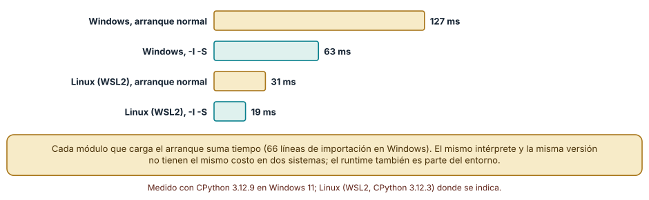
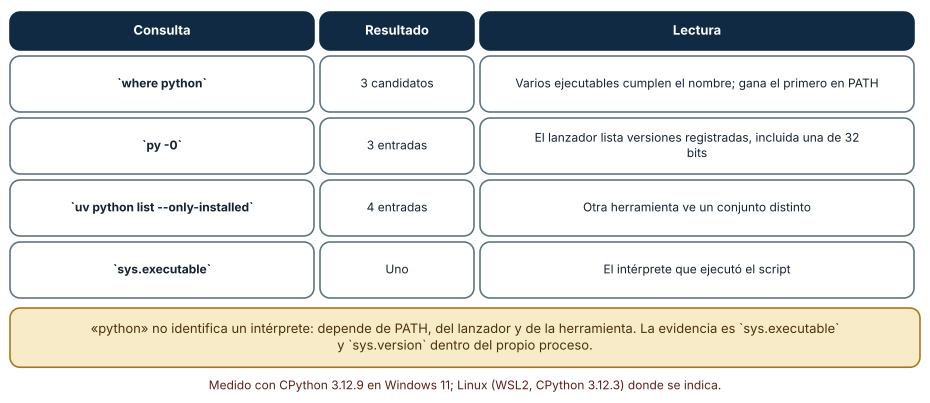
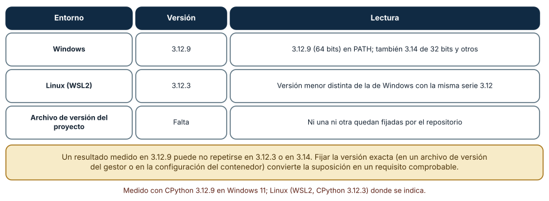

← SE-101 — REPL, notebooks y desarrollo exploratorio · ↑ Parte 08 · 📚 Índice completo · 🌐 Portal · SE-103 — Entornos virtuales y aislamiento de dependencias →
Punto profesional y fundamento pedagógico
Punto profesional. La clase existe para fijar y cambiar versiones de runtimes haciendo visible la resolución efectiva.
Por qué aparece aquí. Se sitúa después de REPL, notebooks y desarrollo exploratorio y antes de Entornos virtuales y aislamiento de dependencias: convierte el conocimiento anterior en una decisión observable que la clase siguiente podrá reutilizar. La continuidad se comprueba en el artefacto, no por compartir vocabulario.
Error conceptual que debe corregir. Confundir gestor de versiones con entorno de dependencias.
Secuencia de aprendizaje. Antes de leer la solución, el estudiante predice el resultado del caso normal y del error conceptual anterior. Luego explica un caso resuelto paso a paso, construye un contraejemplo que cambie la decisión y, sin consultar el texto, reconstruye el mecanismo y lo aplica a una entrada nueva. La secuencia usa predicción, explicación propia, contraste y recuperación. ICAP distingue participación de construcción de conocimiento; How People Learn II exige conectar conocimiento previo, contexto y transferencia; la práctica de recuperación respalda producir de nuevo la explicación tras una demora; y Education for Life and Work exige devolución que explique la causa del error.
Evidencia de aprendizaje. Runtime-resolution.md con archivo de versión, PATH, ejecutable y prueba en dos versiones. Debe contener predicción previa, observación, explicación causal, contraejemplo, criterio de aceptación y una nota de qué dato haría cambiar la conclusión.
Límite de la conclusión. Instalar una versión no garantiza compatibilidad de dependencias.
Trazabilidad fuente → afirmación
| Fuente primaria u oficial | Afirmación que respalda | Lo que no prueba |
|---|---|---|
| Python venv | Aislamiento de intérprete, scripts y entorno virtual; autoridad: Python Software Foundation | No demuestra por sí sola que el artefacto del estudiante sea correcto. |
| Development Container Specification | Configuración reproducible de herramientas y ciclo de vida del contenedor; autoridad: Dev Container Specification maintainers | No demuestra por sí sola que el artefacto del estudiante sea correcto. |
| pyenv | documenta selección de intérprete mediante shims y archivos de versión | No demuestra por sí sola que el artefacto del estudiante sea correcto. |
| rustup | documenta toolchains y selección de versiones | No demuestra por sí sola que el artefacto del estudiante sea correcto. |
Antes de empezar
Esta clase continúa el entorno reproducible de diagnóstico de la Parte 08. Recupera la evidencia de la clase anterior, añade una decisión propia de Gestores de versiones de runtimes y deja un artefacto que la clase siguiente deberá consumir. La pregunta activa es: ¿Cómo garantizar que terminal, editor, CI y contenedor ejecuten el mismo runtime esperado?
Prerrequisitos
- Haber completado la clase anterior o reconstruir su contrato y evidencia.
- Python 3.11 o posterior, terminal, editor y Git; un segundo runtime es opcional y debe declararse.
- Trabajar con fixtures sintéticos: ninguna observación necesita datos de una persona o sistema real.
Problema auténtico
El entorno reproducible de diagnóstico muestra Python 3.12 en terminal, pero el launcher, el IDE y CI resuelven versiones diferentes. Una característica disponible localmente falla antes de iniciar pruebas.
Objetivos observables
Al terminar podrás explicar los cinco mecanismos de esta clase, predecir su comportamiento antes de ejecutar, construir un caso normal y uno límite, diagnosticar el fallo controlado, comparar una alternativa y entregar evidencia que otra persona pueda reproducir.
Mapa conceptual
Ver la notación fuente del diagrama
flowchart LR
N1[Runtime e implementación] --> N2[Resolución por PATH] --> N3[Gestor de versiones] --> N4[Compatibilidad / sintaxis] --> N5[Actualización / rollback]
N5 -->|fallo o cambio| N1El mapa se lee como una cadena de razonamiento, no como fases obligatorias del runtime. La flecha de retorno indica que un fallo o cambio de requisito obliga a revisar el modelo inicial; no autoriza a parchear solo la última salida.
Temas y por qué importan
| Tema | Por qué cambia una decisión profesional | Evidencia mínima |
|---|---|---|
| Runtime e implementación | La versión del lenguaje, la implementación y la arquitectura son dimensiones distintas. | Predicción, traza causal y contraejemplo de Runtime e implementación en runtime-resolution.md |
| Resolución por PATH | El shell busca ejecutables según PATH, alias, launcher o shim. | Predicción, traza causal y contraejemplo de Resolución por PATH en runtime-resolution.md |
| Gestor de versiones | Un gestor instala y selecciona runtimes por archivo o comando. | Predicción, traza causal y contraejemplo de Gestor de versiones en runtime-resolution.md |
| Compatibilidad y sintaxis | Un rango como `>=3. | Predicción, traza causal y contraejemplo de Compatibilidad y sintaxis en runtime-resolution.md |
| Actualización y rollback | Actualizar runtime requiere suite, dependencias compatibles y plan de reversión. | Predicción, traza causal y contraejemplo de Actualización y rollback en runtime-resolution.md |
Conceptos y decisiones
1. Runtime e implementación
La versión del lenguaje, la implementación y la arquitectura son dimensiones distintas. Python 3.12 no identifica necesariamente build, ABI o distribución. El proyecto declara rango soportado y matriz realmente probada.
2. Resolución por PATH
El shell busca ejecutables según PATH, alias, launcher o shim. python puede cambiar por terminal y directorio. Registrar ruta absoluta observada ayuda a diagnosticar; hardcodearla en el proyecto reduce portabilidad.
3. Gestor de versiones
Un gestor instala y selecciona runtimes por archivo o comando. Su shim intercepta resolución y debe inicializarse en el shell. La configuración versionada expresa intención, pero CI debe instalar explícitamente y comprobar la versión efectiva.
4. Compatibilidad y sintaxis
Un rango como >=3.11 promete que código y dependencias funcionan en cada versión incluida. Probar solo la más nueva no sostiene esa promesa. Cambios de stdlib, warnings y orden pueden descubrir dependencias accidentales.
5. Actualización y rollback
Actualizar runtime requiere suite, dependencias compatibles y plan de reversión. Se prueba en matriz antes de cambiar el predeterminado. Conservar una versión vulnerable indefinidamente tampoco es estabilidad; riesgo y soporte guían el calendario.
Cuánto cuesta arrancar el intérprete
El runtime es parte del entorno, y arrancarlo tiene un costo medible. La mediana de siete arranques de python -c pass fue de 127 ms en Windows y de 31 ms en Linux (WSL2). Con -I -S (modo aislado y sin cargar el módulo site) bajó a 63 ms en Windows y 19 ms en Linux. El arranque normal importó 66 módulos según -X importtime. La diferencia entre sistemas muestra que *la misma versión no tiene el mismo costo en dos sistemas*; la medición de rendimiento siempre declara el entorno.

Cómo leer la figura. Cada par compara arranque normal y aislado en un sistema. Dónde deja de valer: el arranque depende del disco, del antivirus y de los paquetes que haya en site-packages (que se importan al arrancar si hay archivos .pth); en otro equipo los valores cambian, no la jerarquía.
Qué Python se ejecuta
«Python» no identifica un intérprete. En la misma máquina, where python encontró tres candidatos, el lanzador py -0 listó tres versiones registradas (entre ellas una de 32 bits) y uv python list --only-installed mostró cuatro. Cada herramienta ve un conjunto distinto, y quien gana depende del orden de PATH. La evidencia fiable es la que da el propio proceso: sys.executable y sys.version. Un script que dice «usa python» sin más ejecuta lo que encuentre primero.

Cómo leer la figura. La columna central cuenta cuántos intérpretes ve cada consulta. Dónde deja de valer: en Linux y macOS los mecanismos son otros (enlaces simbólicos, update-alternatives, gestores como pyenv), pero el problema de ambigüedad es el mismo.
Fijar la versión exacta
En esta máquina se ejecutó CPython 3.12.9 en Windows y 3.12.3 en Linux: la misma serie, compilaciones distintas. Un resultado medido en una puede no repetirse en la otra, y mucho menos en 3.14. El repositorio no fijaba ninguna de las dos. Un gestor de versiones de runtime (el lanzador py, uv, pyenv, asdf) convierte el requisito en un archivo (.python-version, .tool-versions) que otra persona o la CI pueden leer. La regla es que el repositorio declare *qué* versión necesita y que una herramienta verifique que coincide.

Cómo leer la figura. La última fila es la carencia: nada en el repositorio fija la versión. Dónde deja de valer: fijar la versión exacta tiene un costo de mantenimiento (actualizaciones de seguridad); se decide cada cuánto se revisa.
Definiciones de trabajo
- runtime e implementación: la versión del lenguaje, la implementación y la arquitectura son dimensiones distintas.
- resolución por path: el shell busca ejecutables según path, alias, launcher o shim.
- gestor de versiones: un gestor instala y selecciona runtimes por archivo o comando.
- compatibilidad y sintaxis: un rango como `>=3.
- actualización y rollback: actualizar runtime requiere suite, dependencias compatibles y plan de reversión.
Las definiciones son operativas para el entorno reproducible de diagnóstico. No convierten términos con historia más amplia en sinónimos y deben contrastarse con la documentación primaria enlazada al final.
Ejemplo mínimo
python --version
python -c "import platform,sys; print(sys.executable); print(platform.python_implementation()); print(platform.machine())"Antes de ejecutar, predice estado, resultado y error. Después registra versión, comando y salida. Si el fragmento es pseudocódigo o pertenece a otro lenguaje, etiquétalo como tal y no afirmes que fue ejecutado.
Ejemplo profesional
En el entorno reproducible de diagnóstico, una investigación conserva síntoma, entorno, reproducción, hipótesis, observaciones, causa, corrección y regresión. La implementación de esta clase debe conservar ese contrato aunque cambie la forma interna. El caso profesional no pregunta únicamente si produce una salida: pregunta quién puede producirla, qué estado observa, cómo falla y qué rastro permite disputar una decisión incorrecta.
Compara el caso normal con autorización falsa, evidencia incompleta, empate y repetición. Un mecanismo es apropiado cuando esas diferencias quedan visibles y localizadas; es peligroso cuando dependen de orden accidental, estado oculto o una convención que el consumidor no puede conocer.
Práctica guiada
- Copia el contrato de entrada y salida antes de escribir implementación.
- Predice el caso normal y un límite; identifica la invariante que no puede romperse.
- Implementa la versión mínima sin I/O dentro del núcleo.
- Ejecuta el caso y conserva comando, versión y salida bajo
evidence/. - Introduce el fallo controlado, reduce la reproducción y formula dos hipótesis rivales.
- Corrige la causa, añade regresión y ejecuta el conjunto completo.
- Compara con otro paradigma o lenguaje indicando qué semántica se preserva.
Ejercicios
- Candidatos: lista todos los intérpretes que encuentra tu sistema y marca cuál ejecutaría el comando
python. - Arranque: mide la mediana de cinco arranques de tu intérprete con y sin
-I -Sy calcula la razón. - Versión: escribe el archivo que fijaría la versión exacta en tu repositorio y la comprobación que falla si no coincide.
- Importaciones: ejecuta
-X importtimey señala los tres módulos más costosos del arranque.
Reto verificable
Entrega implementación, fixtures, pruebas y un informe corto. Se aprueba si otra persona ejecuta desde checkout limpio, obtiene los mismos resultados y puede relacionar cada rama o transformación con una regla del dominio. No se aprueba por cantidad de archivos ni por usar la sintaxis característica del paradigma.
Caso conductor
El entorno reproducible de diagnóstico parte de una inversión de empates en la biblioteca de estructuras y algoritmos, captura versión y entrada mínima, compara un entorno sano con uno afectado y conserva la primera divergencia observable. Cambia después una sola regla o condición y revisa qué archivos, pruebas y trazas debieron modificarse. Esa superficie de cambio alimenta el proyecto final de la parte.
Preguntas frecuentes
¿Qué hace el lanzador py en Windows?
Elige entre las versiones de Python registradas según una opción o un archivo de configuración. py -0 las lista. Es la forma estándar de elegir versión sin depender de PATH.
¿Para qué sirve -I?
Ejecuta en modo aislado: ignora variables de entorno PYTHON* y el directorio del script en sys.path. Sirve para ejecutar herramientas sin que el entorno del usuario las altere.
¿Fijo la versión menor o la exacta?
Para reproducir mediciones y errores, la exacta. Para compatibilidad de una biblioteca, un rango. La decisión se escribe en el archivo de versión.
¿Qué pasa si el sistema actualiza Python?
Los entornos virtuales que apuntan al intérprete anterior dejan de funcionar o cambian de comportamiento. Por eso se recrean desde una definición, no se reparan a mano.
Fallo controlado y diagnóstico
Configura el archivo de versión pero no el CI. Añade un assert de versión al diagnóstico y una matriz que cubra mínimo y máximo soportado.
Registra síntoma, entrada mínima, hipótesis, observación que descarta cada hipótesis, causa, corrección y prueba de regresión. No cambies simultáneamente implementación, fixture y expectativa.
Reproduce la ambigüedad. En tu máquina, ejecuta where python (Windows) o which -a python3 (Linux) y compara con py -0 o con uv python list. Luego ejecuta python -c "import sys; print(sys.executable)" desde dos terminales con distinto PATH. Síntoma: el mismo comando ejecuta intérpretes distintos. Hipótesis: PATH decide. Prueba: reordena PATH en la sesión y repite. Conclusión: el nombre python no es una dependencia; la versión exacta se declara en un archivo y se verifica al inicio del script. Guarda la lista de candidatos y el intérprete elegido en tooling-map.md.
Errores comunes y cómo corregirlos
| Síntoma | Causa | Corrección |
|---|---|---|
| El script usa otro Python en otra máquina | Se invoca python a secas | Declarar la versión y verificarla al inicio |
| La medición no se repite en otro equipo | Compilación o sistema distintos | Registrar versión y sistema con cada medición |
| Un entorno deja de funcionar tras actualizar el sistema | Apunta a un intérprete que cambió | Recrear el entorno desde su definición |
| El arranque es lento | Muchos módulos o .pth en site-packages | Medir con -X importtime y revisar paquetes |
| Dos herramientas discrepan sobre la versión | Ven conjuntos distintos | Comparar con sys.executable dentro del proceso |
Entorno y archivos clave
work/SE-102/
├── README.md
├── diagnostic_environment/
│ ├── domain.py
│ └── se_102.py
├── fixtures/cases.json
├── tests/test_se_102.py
└── evidence/diagnosis.mdEl README declara plataforma, runtimes, comandos, limpieza y límites. Evita dependencias externas cuando la biblioteca estándar permita observar el mecanismo; si agregas una, fija procedencia y versión.
Seguridad, ética y accesibilidad
- la autorización forma parte del dominio y no se infiere por ausencia de rechazo;
- no uses
eval, reglas descargadas ni serialización insegura; - limita colas, recursión, tamaño de entrada y tiempo de evaluación;
- redacta trazas y conserva una explicación textual además de color o animación;
- una recomendación automatizada debe poder revisarse, impugnarse y corregirse;
- respeta licencias de ejemplos y atribuye adaptaciones.
Puente hacia el trabajo con agentes
Un agente que ejecuta comandos usa el PATH del entorno donde corre, que puede no ser el del usuario. Un comando como python script.py puede ejecutarse con un intérprete distinto del esperado y producir resultados distintos sin error. El harness debe pasar al agente el intérprete exacto o una forma de verificarlo, y registrar la versión en cada ejecución. Las mediciones de rendimiento que haga un agente sin declarar el entorno no son comparables.
Transferencia
Traslada un fixture al segundo modelo, herramienta, plataforma o lenguaje. Compara representación de ausencia, error, mutabilidad, orden y cancelación. La transferencia está lograda cuando el contrato se conserva y las diferencias están explicadas, no cuando la interfaz se parece.
Evaluación y evidencia
| Criterio | Evidencia para aprobar |
|---|---|
| comprensión | explicación causal de los cinco mecanismos |
| corrección | normal, límite, inválido y contraejemplo |
| diseño | estado, efectos y contrato localizables |
| diagnóstico | reproducción mínima y regresión |
| transferencia | comparación semántica, no estética |
| reproducibilidad | versiones, comandos, salida y límites |
Fuentes
- Language Server Protocol 3.18 — Mensajes, capacidades y sincronización entre editor y servidor; autoridad: Microsoft.
- Debug Adapter Protocol — Breakpoints, frames, variables y negociación de capacidades; autoridad: Microsoft.
- Python Debugging and Profiling — Pdb, cprofile, timeit, tracemalloc y límites instrumentales; autoridad: Python Software Foundation.
- Python venv — Aislamiento de intérprete, scripts y entorno virtual; autoridad: Python Software Foundation.
- Development Container Specification — Configuración reproducible de herramientas y ciclo de vida del contenedor; autoridad: Dev Container Specification maintainers.
- Web Content Accessibility Guidelines 2.2 — Percepción, operación por teclado y reducción de barreras en interfaces; autoridad: W3C.
Cada fuente respalda el mecanismo indicado; ninguna demuestra que la implementación del entorno reproducible de diagnóstico sea correcta. Esa afirmación depende de fixtures, pruebas, trazas y revisión reproducible.
- Python en Windows: el lanzador
py: selección de versiones y la opción-0. - Python: opciones de línea de comandos
-I,-Sy-X importtime: modo aislado, módulositey medición de importaciones, usados en la Figura 1. - uv: gestión de versiones de Python: instalación y descubrimiento de intérpretes.
Límites y siguiente paso
Fijar runtime no aísla paquetes instalados. La siguiente clase explica entornos virtuales, resolución y frontera con herramientas globales.
Glosario
- runtime e implementación: la versión del lenguaje, la implementación y la arquitectura son dimensiones distintas.
- resolución por path: el shell busca ejecutables según path, alias, launcher o shim.
- gestor de versiones: un gestor instala y selecciona runtimes por archivo o comando.
- compatibilidad y sintaxis: un rango como `>=3.
- actualización y rollback: actualizar runtime requiere suite, dependencias compatibles y plan de reversión.
← SE-101 — REPL, notebooks y desarrollo exploratorio · ↑ Parte 08 · 📚 Índice completo · 🌐 Portal · SE-103 — Entornos virtuales y aislamiento de dependencias →